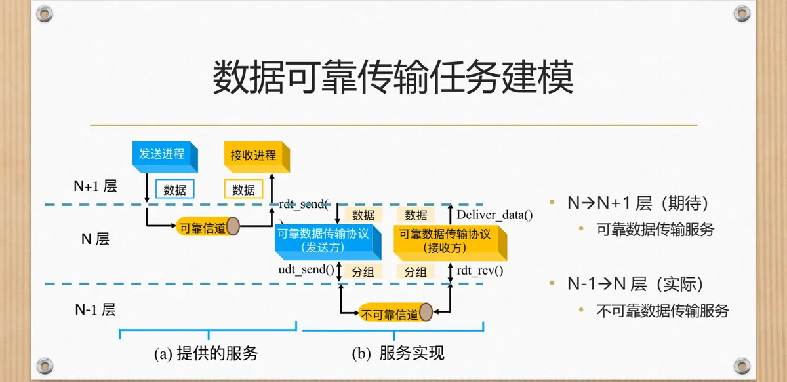
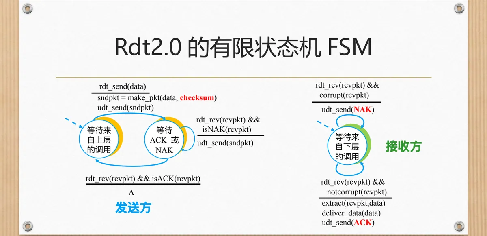
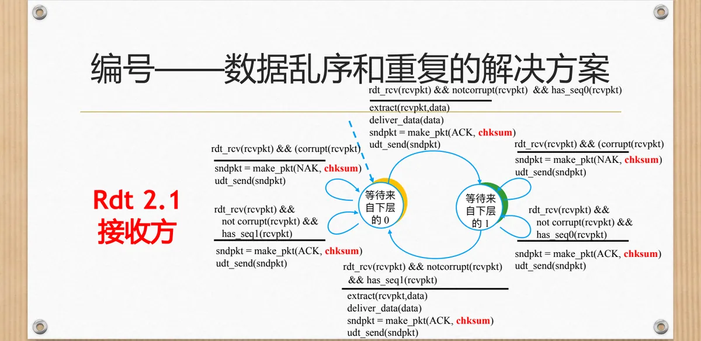
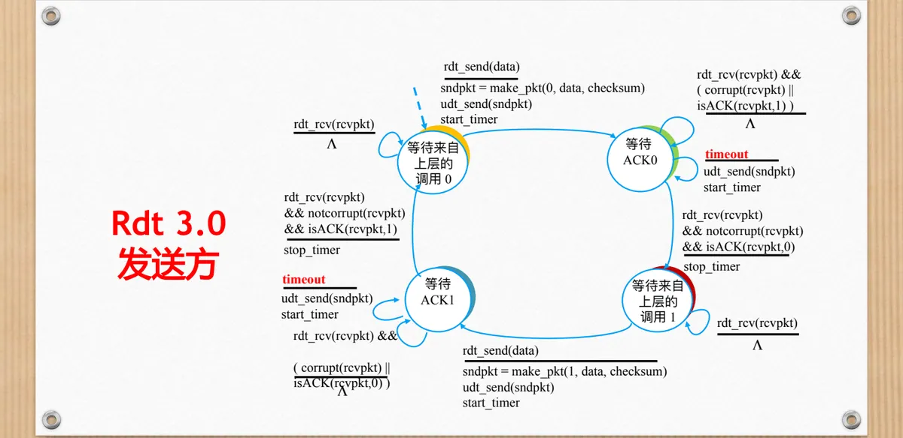
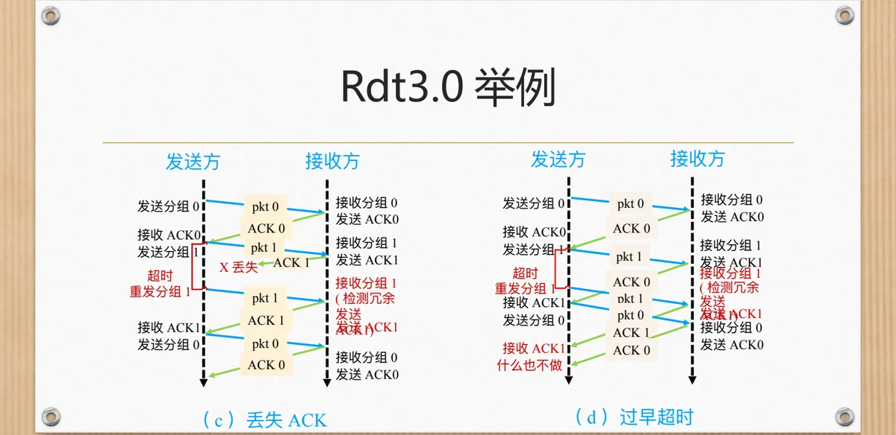
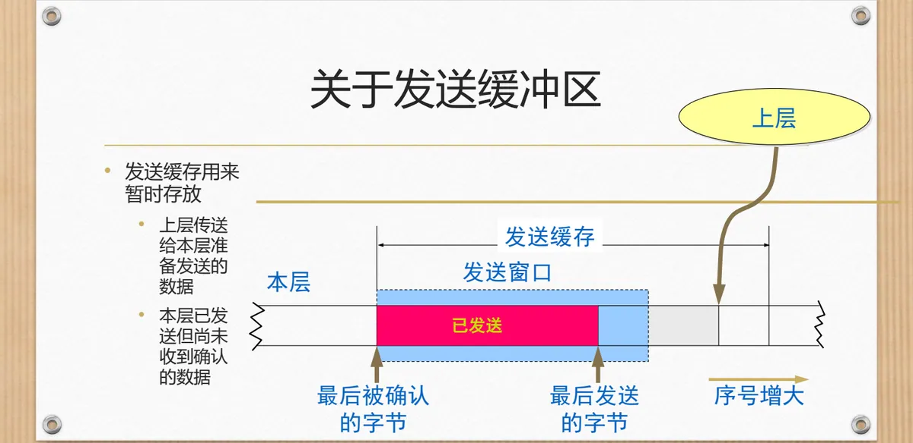

计算机通信与网络 · 第二版讲义 · 第 2 章 网络中的数据通信
2.4 数据可靠传输模型及传输协议的设计
2.3 节提出了可靠传输的需求：数据可能出错、丢失、乱序、重复，而用户要求发出去的数据一定能正确、按序到达。本节把一个能兑现这些承诺的协议设计出来：先抽象成分层模型，再选定描述协议的工具，然后从最理想的信道出发，每解决一个麻烦就暴露出下一个，从可靠数据传输协议 Rdt（Reliable Data Transfer protocol）1.0 一路推到 2.0、2.1、2.2 和 3.0，最后交代收发两侧缓冲区的作用与大小规则。
1. 可靠传输要解决的是什么问题：一个分层模型
先把问题放回分层背景。N 层下方的 N-1 层提供的是不可靠信道，分组可能受伤、可能丢失；上方的 N+1 层期待的却是一项可靠数据传输服务。N 层的任务，就是用这条靠不住的下层信道向上层交出一份靠得住的承诺。模型为它留了四个接口：朝上的 rdt_send() 由上层（如应用层）调用以提交数据，deliver_data() 由接收方的协议调用以交付数据；朝下的 udt_send() 把分组经不可靠通道传给对端，rdt_rcv() 在分组到达接收方时被调用。
难度可概括为一句话：不可靠信道的特性决定了可靠数据传输协议 Rdt 的复杂性。于是有了本节的线索——从最好的假设起步，一次只放一种麻烦进去，看协议添了什么部件，又被逼出什么新问题。

2. 用什么把协议写下来：有限状态机
这里只考虑单向的数据传输，但控制信息是双向的：数据从发送方流向接收方，确认要流回来。发送方和接收方都用有限状态机 FSM（Finite State Machine）描述——协议实体在任一时刻只处在有限个状态之一，发生某个事件就按事先规定的方式迁移到另一个状态，并在迁移时执行某个动作。状态、事件、动作，就是读这类图的三把钥匙。
课堂上的例子能把这套约定讲透：教师在「上课」状态遇到事件「下课铃响」，执行「停止讲课、学生起立」的动作，迁移到「下课」；在「下课」状态遇到事件「上课铃响」，则执行「学生入座、老师开始讲课」，迁回「上课」。
3. Rdt 1.0：假定信道完全可靠
从最简单的情形起步：假设底层信道完全可靠，既不会产生比特错误，也不会丢失分组。信道不出错、不丢东西，发送方交下去的数据一定原样到达，协议什么额外的事都不必做。这版协议称为可靠数据传输协议 1.0（Rdt 1.0）。
发送方只有一个状态「等待来自上层的调用」：上层用 rdt_send(data) 送来数据，它装成分组（packet = make_pkt(data)）后交给下层（udt_send(packet)），再继续等。接收方也只有一个状态「等待来自下层的调用」：分组到达触发 rdt_rcv(packet)，它取出数据（extract）并用 deliver_data(data) 交付上层。整条路径就是一次搬运，没有序号、确认和重传。
4. Rdt 2.0：比特可能出错，引入差错检测与 ACK/NAK
（1）新的假设与要补上的三件事
第一种麻烦是比特受损：分组中的比特可能出错，但所有分组都会按序被接收、不会丢失。数据被打坏，接收方拿到的就是错误的内容，必须由协议自己发现并纠正。这就要求三件事：接收方能判断收到的分组是否受损，发送方能获知它发出的分组是否受损，受损之后系统还有办法补偿，确保接收方最终收到正确的分组。
对应三样手段。判断受损靠差错检测，即让分组带上校验和之类的冗余信息（方法见 2.3 节）；让发送方知道结果靠反馈机制——接收方回送确认 ACK（Acknowledgment）表示收妥，回送否认 NAK（Negative Acknowledgment）表示分组已损坏。
最后的补偿有检错重传与检错纠错两条路，这里采用检错重传：接收方发现受损就回 NAK，发送方据此重发原分组。这样设计出来的协议是可靠数据传输协议 2.0（Rdt 2.0）。
（2）Rdt 2.0 的状态机
发送方比 1.0 多一个状态：收到 rdt_send(data) 后先造出带校验和的分组（sndpkt = make_pkt(data, checksum)）发出去，再进入「等待 ACK 或 NAK」——收到受损分组或 NAK 就重发刚才那个分组并继续等，收到完好的 ACK 才回到「等待来自上层的调用」。接收方更简单：分组完好（not corrupt）就交付数据并回 ACK，受损（corrupt）就不交付、直接回 NAK；它不必记住任何东西，因为按假设分组不会丢失、也不会乱序。

（3）重传逼出的新问题：缓冲区要开多大
「重传」一落实，问题就来了：发送方等反馈期间，刚发出去的分组随时可能要重发，所以必须用缓冲区缓存已发出但尚未收到反馈的报文段。开多大？在 Rdt 2.0 的假设下，收发双方各一个报文段大小就够了——发送方同一时刻只有一个分组未确认。
5. Rdt 2.1：反馈也会坏，给分组编号
Rdt 2.0 漏了一种情况：ACK 和 NAK 自己在回程上也可能受损。发送方收到一个分辨不出是 ACK 还是 NAK 的分组，该怎么办？两种想当然的做法都不成立：一律当成 ACK，接收方明明没拿到正确的数据，发送方却以为发妥，数据就此丢失；一律当成 NAK，则会在接收方本已收妥、只是回程的 ACK 被打坏时送去一个重复的分组，数据被重复交付。根子在反馈消息太简单——它只有「对」「错」两个取值，一个比特出错就认不出来。
既然反馈不可靠，就得让数据分组「可以辨认」，办法是给分组编号：每个数据分组带上序号，只用 0 和 1 交替——第一、第二个分组分别编号 0 和 1，第三个又回到 0。这样发送方收到 ACK 或 NAK 时，结合它对应的序号就能分清「对端确认了新分组」还是「自己收到了一条重复的反馈」；编号也是对付乱序的依据，接收方看序号就知道它是不是自己期待的那一个。据此设计的协议是可靠数据传输协议 2.1（Rdt 2.1）。
它的收发双方各有两个状态，分别对应序号 0 和 1，工作方式互为镜像。发送方在状态 0 里发出带序号 0 的分组（sndpkt = make_pkt(0, data, checksum)）并等待 ACK 或 NAK 0，收到受损反馈或 NAK 就重传，收到完好的 ACK 才迁到状态 1。接收方在期待 0 号分组时收到完好的 0 号分组，就交付数据并回 ACK，随后转而期待 1 号；收到受损分组回 NAK；若收到完好、序号却是 1 的分组，说明是重传造成的重复分组，必须丢弃、不重复交付，但要再回一个 ACK，让发送方知道这个分组早已收过。

一个比特的序号同时解决三件事：反馈受损时发送方能判断它属于哪个分组，重复分组能被识别并丢弃，数据也不会因为一条被打坏的 ACK 被重复交付。
6. Rdt 2.2：取消 NAK，只用带序号的 ACK
Rdt 2.1 已经能工作，但真实的互联网中没有 NAK，只有 ACK。既然只用 ACK 也能把意思表达完整，NAK 就可以取消，处理手段有三条：ACK 中必须指出被确认分组的序号，以便表明正确收到的是哪一个分组；接收方不再发 NAK，改为对最后一个正确收到的分组发送 ACK，也就是收到受损分组时把上一条 ACK 重发一遍；发送方收到重复的 ACK，就按收到 NAK 来处理，重传当前分组。
这样反馈里只剩一种 ACK，但每条都带序号，接收方用「重复的确认」表达了原来 NAK 的意思，发送方比对序号就能识别。得到的协议是可靠数据传输协议 2.2（Rdt 2.2），其有限状态机与 Rdt 2.1 形状几乎一样，只是判断条件换成了序号：发送方等待 ACK0 时，只要收到受损分组或一个 ACK1（isACK(rcvpkt, 1)）就重传，只有收到完好的 ACK0 才迁到下一个状态。两者功能等价，Rdt 2.2 只是把「显式否认」换成了「重复确认」。
7. Rdt 3.0：还会丢包，加计时器超时重传
到此为止，协议仍假定分组不会丢失。真实信道不但可能出现比特差错，而且可能丢包。这条假设一放进来，前面所有设计都会撞上同一个尴尬局面：分组若在半路丢了，接收方根本不知道有人给它发过东西，自然不会回反馈，发送方等下去永远等不到 ACK。课件在这一页写下「耐心的等待」，可等待必须有个期限。
办法是给发送方配一个计时器：每发出一个分组就启动计时器，时限内收到正确的 ACK 就停表、继续发下一个；一旦超时仍未收到 ACK，就断定分组（或者回程的 ACK）已丢失，把缓存中的分组重传一次并重新启动计时器。这一版称为可靠数据传输协议 3.0（Rdt 3.0），它等于 Rdt 2.2 加上超时重传——序号解决重复，ACK 解决确认，计时器解决丢失。

课件用四组时序对照它的表现：无丢包时它和 Rdt 2.2 一样一问一答，双方按序号交替推进；分组丢失时接收方毫不知情，发送方超时重传，接收方收到后照常交付并回 ACK；ACK 丢失时发送方同样超时重传，这次接收方收到的是重复分组，它检测出冗余后重发 ACK，发送方终于拿到确认。
最值得留意的是过早超时：时限设得太短，ACK 还在回程路上，发送方就以为丢了而重传；接收方把这第二个分组当作冗余分组，检测出来后再发一条 ACK；这条重复的 ACK 到达时，发送方已在等待下一个分组的确认，便对它什么也不做。协议依旧正确，代价只是链路上多跑了一个无用分组——计时时限不能随意取小，要与往返时延相称；Rdt 3.0 的性能代价与改进空间留到 2.5 节讨论。

对照第一版讲义 3.4.2 停止-等待协议 会发现，这一路推演出来的正是发送方每发一个分组就停下来等确认、靠超时重传来兜底的做法。
8. 发送缓冲区、接收缓冲区与大小的确定
协议跑通之后还要问数据存在哪里。前面几版收发各一个报文段大小的缓冲区就够用，因为一次只允许一个分组在路上；一旦允许多个分组同时未确认，缓冲区就要按窗口来组织，窗口两端必须用序号标出来。
发送缓存暂时存放两类数据：上层传送给本层、准备发送的数据，以及本层已经发出、但尚未收到确认的数据。已发出而未确认的这一段称为发送窗口，左端是「最后被确认的字节」，右端是「最后发送的字节」，随着确认回来朝序号增大的方向移动。

接收缓存暂存的是另一类数据：按序到达、但还没被上层取走的数据，以及乱序到达的数据。接收窗口的两端同样是两个位置：「下一个读取的字节」是上层下次要取走的那一个，「下一个期望收到的字节」正是接收方在 ACK 中要填写的确认号——可见确认号本来就是接收窗口的边界。
缓冲区该开多大？发送端缓冲区不小于链路的带宽–时延积：这个量是链路带宽与往返时延 RTT（Round-Trip Time）的乘积，等于一个来回里链路上最多能容纳的数据量，也就是管道的容量；发送端不小于它，才能在一个 RTT 内持续灌满管道，不至于因为等 ACK 而让链路空着。接收端缓冲区则至少等于带宽–时延积，开得过小则接收窗口也小，发送方把窗口用满后必须停发，吞吐量随之下降。前者保「发得满」，后者保「收得下」。
本节小结
- 可靠传输协议在不可靠的下层之上向上层兑现可靠服务的承诺：朝上用 rdt_send()、deliver_data()，朝下用 udt_send()、rdt_rcv()，不可靠信道的特性决定了协议的复杂性；
- 协议用有限状态机 FSM 描述，读图只抓状态、事件、动作：事件引起状态变迁，变迁中执行动作；
- 每一步推演都是「解决一个问题、冒出一个新问题」：Rdt 1.0 假定信道完全可靠，什么也不用做；Rdt 2.0 放进比特差错，用差错检测 + ACK/NAK 反馈 + 检错重传来补偿，代价是收发双方各要一个报文段大小的缓冲区；
- Rdt 2.1 发现 ACK/NAK 本身也会受损，于是给数据分组编号（0、1 交替）：发送方据此分辨反馈属于哪个分组，接收方据此识别并丢弃重复分组、同时重发 ACK；Rdt 2.2 取消 NAK，让 ACK 带上序号，用重复的 ACK 代替 NAK，与 Rdt 2.1 功能等价；
- Rdt 3.0 再放进丢包，用计时器超时重传兜底，过早超时只多跑一个无用分组；发送缓存存放待发送与已发送未确认的数据，接收缓存存放按序待取与乱序到达的数据，两侧缓冲区的大小都围绕带宽–时延积确定（Rdt 3.0 的性能改进见 2.5 节）。